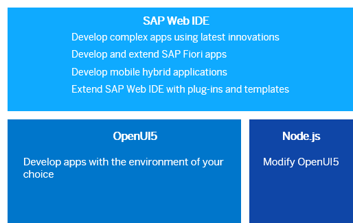

Development Environment
This part of the documentation gives you guidance on the most common and recommended use cases of the installation, configuration, and setup of the OpenUI5 development environment.
Depending on your use case, you can choose one of the following development environments.
This image is interactive. Hover over each area for a description. Click highlighted areas for more information.
